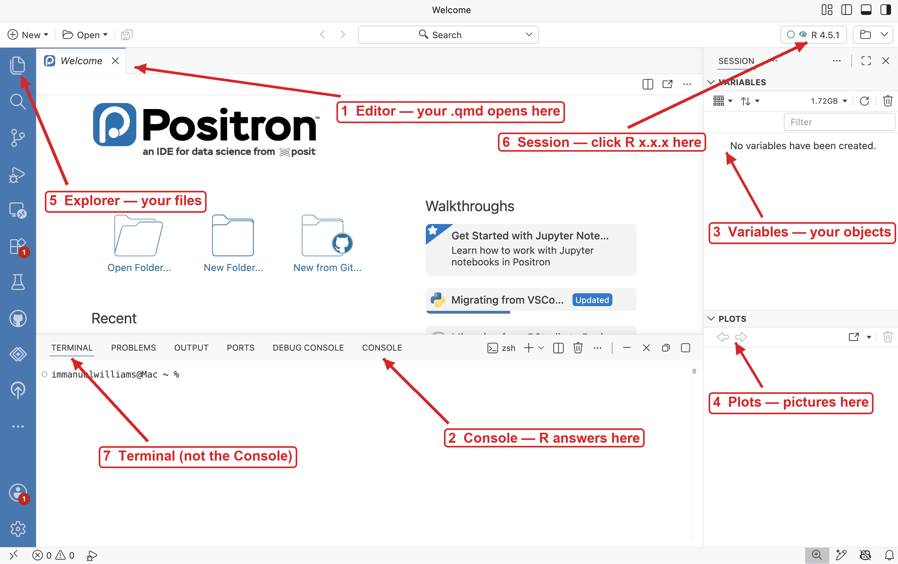

# LM2: this line is a COMMENT — R ignores anything after #
2 + 2[1] 43 * 7[1] 2110 / 4[1] 2.5STAT/DATA 1810 · Week 1 Wednesday · Student version
Your name here
Name: ____________________ · Date: __________
Before anything else, type your name and today’s date on the line above (and put your name in the
author:line at the very top of this file).
How to read this document. Two labels show up over and over:
R is a programming language for working with data. Positron is the program we use to talk to R — an integrated development environment (IDE). R does the work; Positron is the workshop it happens in.
Need bigger, step-by-step instructions? See Prep — Getting Set Up.
Check each box as you finish it:
RDataR, two folders: Notes and LabsWhen you are done it looks like this:
Desktop/
├── R/
│ ├── Notes/
│ └── Labs/
└── Data/Positron is divided into panes. The numbers in the picture match the list below — find each one on your screen and check it off. Physically point at it.

.qmd open in the Editor instead of the Welcome page.YT1 (1 min). A neighbor asks “where do I look to see what objects I’ve made?” Which pane do you point at? ____
YT2 (1 min). You type code and want it to be there tomorrow. Which pane does it go in? ____
R runs inside a session — a running copy of R that Positron is talking to.
How to get to the Session tab. Look at the top-right corner of Positron (arrow 6 in the picture). It shows which R is running, something like R 4.5.1. That label is your session. Click it once: a small menu opens showing the running R, a Restart button, a Shutdown button, and any other interpreters installed on your computer. Close the menu (press Escape). Now look just below it on the right side: the panel labeled SESSION holds the Variables and Plots panes — everything the session is holding in memory, made visible.
Three things to know about the session, today:
Do this now: create nothing yet, look at Variables (empty), and remember what empty looks like — we’ll come back after we’ve made some objects.
Q1. In one sentence: what is the difference between the Console and the Editor?
Your answer:
LM1 — the Console (2 min). Click into the Console, type 2 + 2, press Enter. R answers. Now press the up-arrow — the Console remembers your last line. Edit it to 2 + 3 and press Enter.
LM2 — a code chunk (5 min). This document is a Quarto file: text and code mixed together. The gray boxes are code chunks. A chunk is:
```{r} (three backticks, then {r})```Look at the chunk below in the Editor. Notice the small play button at its top-right corner. Click it (or put your cursor on a line and press Cmd/Ctrl + Enter to run just that line):
Two things happened: the results appeared under the chunk and the same code ran in the Console. A chunk is just a saved bundle of Console lines.
LM3 — chunk options (2 min). Lines that start with #| at the top of a chunk are options — instructions to Quarto, not R. You will see #| eval: false in this document; it means “show this code, but don’t run it when rendering.” Useful for code that is broken on purpose.
YT3 (3 min). Edit the chunk below so it computes THREE things: 5 minus something to give 1; 100 divided by 8; and 2 to the 10th power (hint:
^).
Q2. Where did the output show up — under the chunk, in the Console, or both? ____
LM4 — the arrow (3 min). <- stores a value under a name. Without it, R computes and forgets. (Type it fast: Alt + - inserts <- in Positron.)
Look at the Variables pane — cups is there now, with its value.
LM5 — objects combine (4 min). Predict before you run: what will total be?
Q3. Prediction: ____ · What R said: ____
LM6 — overwriting (4 min). Run this, then check the Variables pane again.
Q4.
totaldid NOT change to 45. Why not? (Hint: WHEN wastotalcomputed?)Your answer:
YT4 (5 min). In the chunk below: (a) create
hoursholding how many hours you slept last night; (b) createminutesashourstimes 60; (c) printminutes; (d) predict — if you now changehoursto 8, doesminuteschange? Test it.
Your prediction for (d): ____ · What happened: ____
Now look at Variables: how many objects are there? Names are on the left, values on the right — this pane is your session’s memory, made visible.
LM7 — a function (4 min). A function is a named action: name(arguments). mtcars is a dataset built into R — 32 cars from 1974. No import needed. The $ pulls one column out of it (much more on $ next week).
YT5 (4 min). One line each: (a)
max()of horsepower,mtcars$hp; (b)min()of miles-per-gallon; (c)ncol()ofmtcars— how many columns? (d)round()the mean mpg to 1 decimal place. (Hint:round(x, 1).)
LM8 — help (5 min). Every function has documentation. Run this, and the Help pane opens:
Read the Usage and Arguments sections. That’s where the answers to “what does this function want from me?” always live.
Q5. From the help page: what does the
na.rmargument do?Your answer:
YT6 (2 min). Look up
?round. What is the name of its second argument, and what is its default value? ____ · ____
LM9 — packages (5 min). A package is a collection of functions someone wrote. You install once (download to your computer), you load every session (open the toolbox):
Q6. Fill the blanks: install.packages() runs ____ per computer; library() runs ____ per session.
LM10 — read the error (4 min). Run this broken line. Read the message slowly before fixing it.
Q7. What did the error message say, and what did it mean?
Your answer:
YT7 (4 min). Each chunk below has ONE bug. Read the error, then fix it in place. Write the error family in the comment (typo in a function name? object that doesn’t exist? something else?).
LM11 — the reset button (4 min). If R gets confused, restart the session: Console toolbar → Restart R (or the top-right session menu). Do it now, for real. Then look at Variables.
Q8. After the restart: is
cupsstill in Variables? ____ · Is the code that CREATEDcupsstill in this file? ____ · Re-run section 2’s chunks — how long did it take to getcupsback? ____
Save this file into your project’s R/ folder as fnd01_yourlastname.qmd, then press Render (the button above the Editor, or Cmd/Ctrl + Shift + K). A webpage appears — your first reproducible document. Every chunk in it re-ran from a fresh session to build that page.
Exit question: name one thing that lives in the Variables pane and one thing that lives in the Editor, and say which one survives a restart.
Your answer: